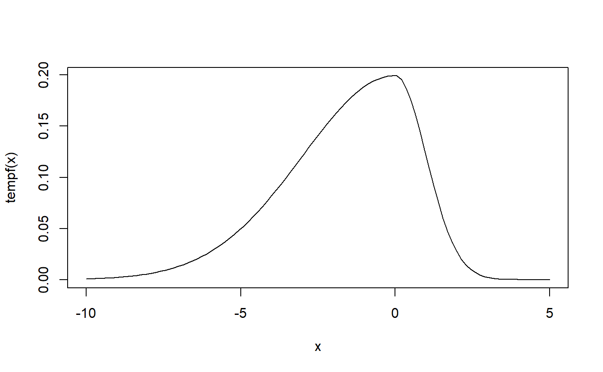
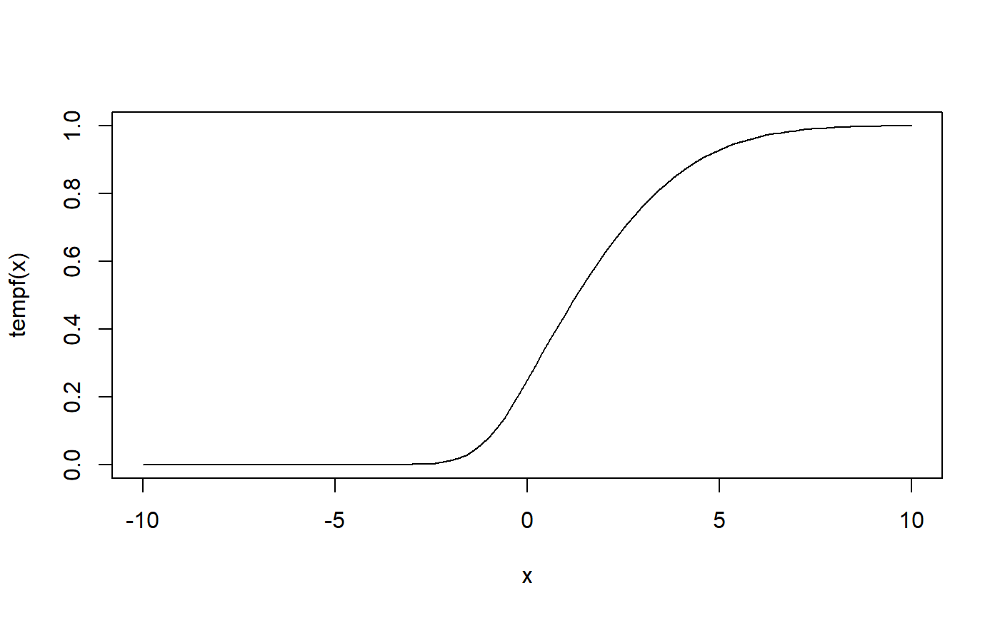
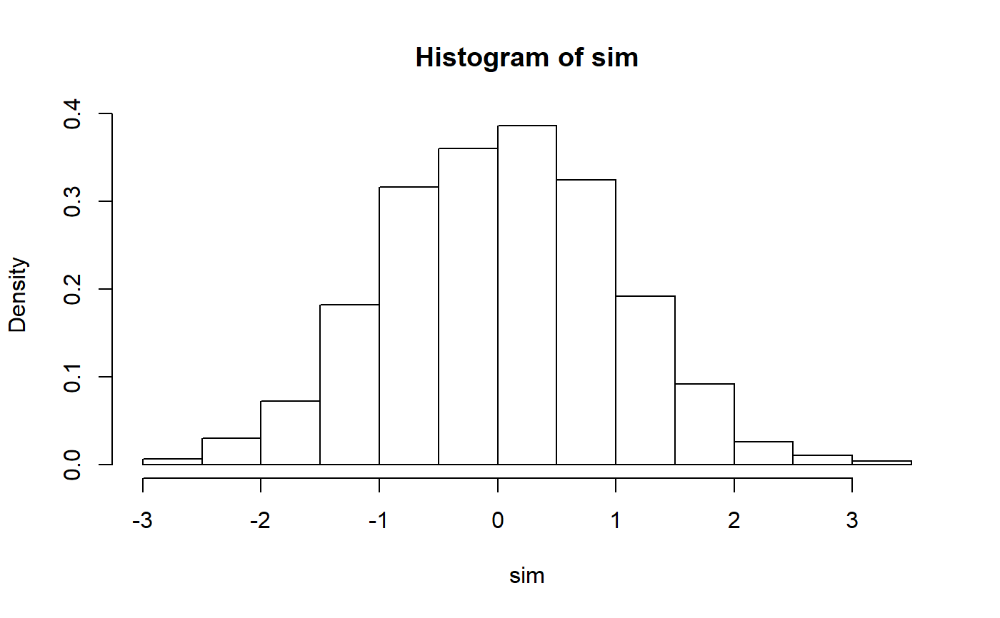

dtp3.RdDensity, distribution function, quantile function and random generation for the 3-parameter two piece distribution with 3 parameterizations: two-piece (tp), epsilon-skew (eps), and inverse scale factors (isf).
dtp3(x, mu, par1, par2, FUN, param = "tp", log = FALSE) ptp3(x, mu, par1, par2, FUN, param = "tp", log.p = FALSE) qtp3(p, mu, par1, par2, FUN, param = "tp") rtp3(n, mu, par1, par2, FUN, param = "tp")
| x | vector of quantiles |
|---|---|
| mu | location parameter, \(\mu\) |
| par1 | scale parameter 1, \(\sigma_1\) |
| par2 | scale parameter 2, \(\sigma_2\) |
| FUN | a symmetric density |
| param | parameterizations used with default of |
| log | logical; if TRUE, probabilities p are given as log(p) |
| p | vector of probabilities |
| n | number of observations. If |
| log.p | logical; if TRUE, probabilities p are given as log(p) |
The 3-parameter two piece distribution with parameters \(\mu\) \(\sigma_1\)and \(\sigma_2\) has the following density:
$$s(x) = \frac{2}{\sigma_1 + \sigma_2}f( ( x -\mu )/\sigma_1 ) \quad for \quad x<\mu $$ and $$s(x) = \frac{2}{\sigma_1 + \sigma_2}f( ( x -\mu )/\sigma_2 ) \quad for \quad x\geq \mu $$
where f(x) is a symmetric density about zero.
If param is not specified, it assumes the default value of "tp".
Information about the "eps" and "isf" parameterizations can be found in the References.
dtp3 gives the density, ptp3 gives the distribution function,
qtp3 gives the quantile function and rtp3 generates random deviates.
Arellano-Valle, R. B Gómez, H. W. and Quintana, F. A. (2005). Statistical inference for general class of asymmetric distributions. Journal of Statistical Planning and Inference, 128: 427-443.
Fernández, C. and Steel, M. F. J. (1998). On Bayesian modeling of fat tails and skewness. Journal of the American Statistical Asociation, 93, 359-371.
Mudholkar, G. S. and Hutson, A. D. (2000). The epsilon-skew-normal distribution for analyzing near-normal data. Journal of Statistical Planning and Inference, 83: 291-309.
Rubio, F. J. and Steel, M. F. J. (2014). Inference in Two-Piece Location-Scale models with Jeffreys Priors, with discussion. Bayesian Analysis, 9: 1-22.
dnorm for the normal distribution and dt for the Student t distribution
dtp4 for the 4-parameter two piece distribution.
## 3-parameter two piece normal density with parameterization "tp" tempf = function(x) dtp3(x,0,3,1,dnorm,param="tp") curve(tempf,-10,5)## 3-parameter two piece normal distribution with parameterization "tp" tempf = function(x) ptp3(x,0,1,3,pnorm,param="tp") curve(tempf,-10,10)## random number generation for 3-parameter two piece normal distribution ## with parameterization "tp" sim <- rtp3(1000,0,1,1,rnorm) hist(sim,probability=TRUE)## quantile function for the 3-parameter two piece normal distribution ## with parameterization "tp" qtp3(0.5, 0, 1, 1, qnorm ,param = "tp")#> [1] 0